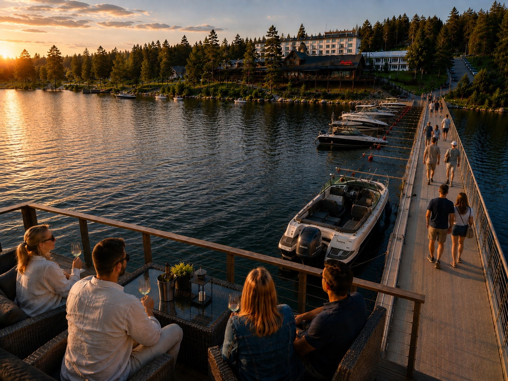
From your dock to Tahko
A short scenic route connects the lake side of the villa to Tahko — approximately 10 minutes by boat from the villa's private dock. Arrive in Tahkolahti — beside the guest marina, restaurants and resort life.
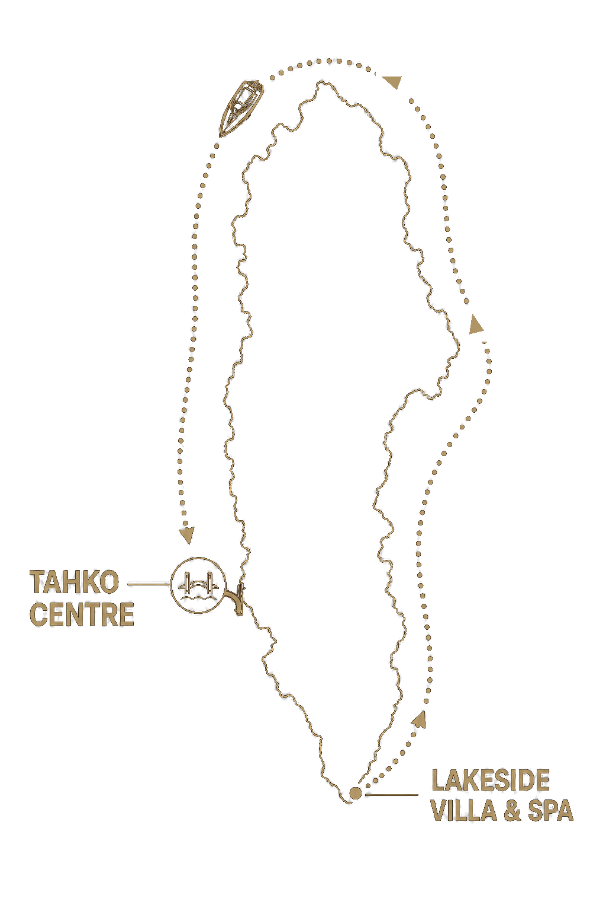
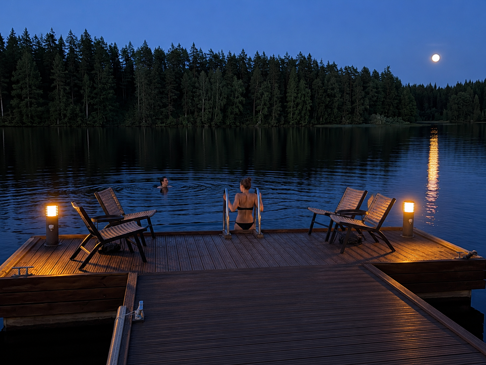
Moonlight swims from your own dock
Summer evenings invite slow swims, sauna-to-lake rituals and the kind of quiet moments that make the property feel entirely your own.
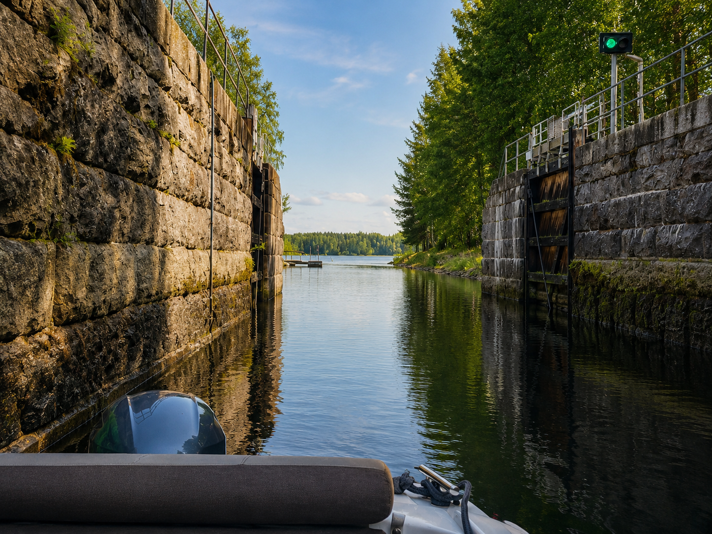
The route opens from Tahko
From Syväri, the route continues through water routes towards Lastukoski and Kuopio — a small-form boating journey from the villa's own lake.
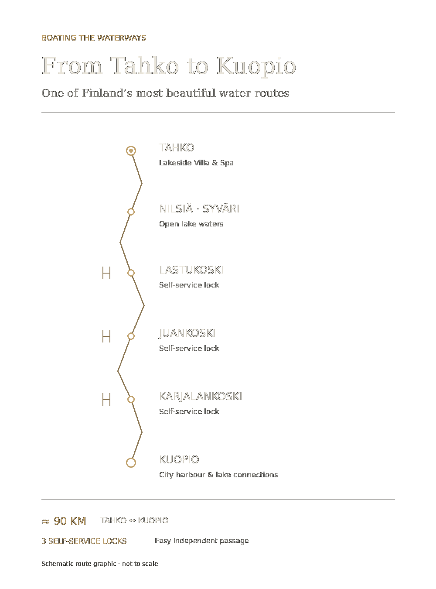
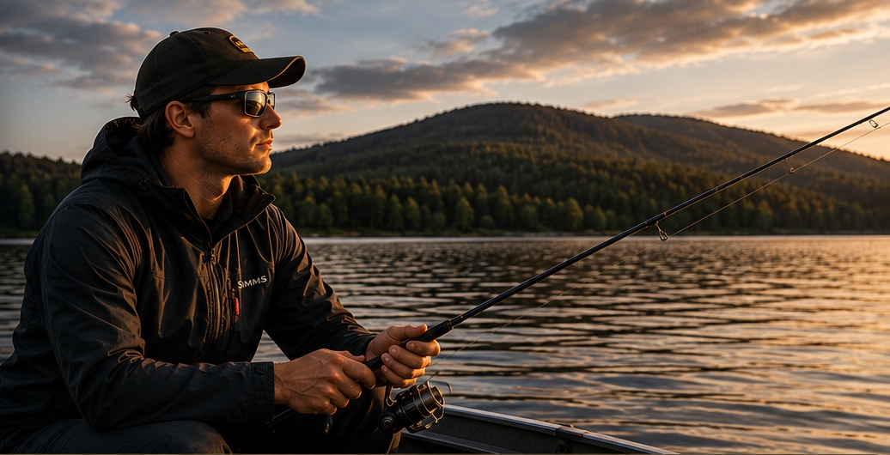
From the dock to deeper water
Syväri is known for pike and zander. Leave directly from the dock for quiet evening fishing or a longer day on the lake.
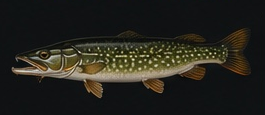
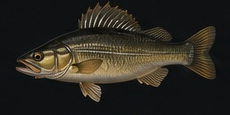
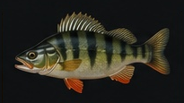
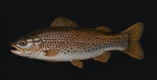
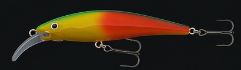
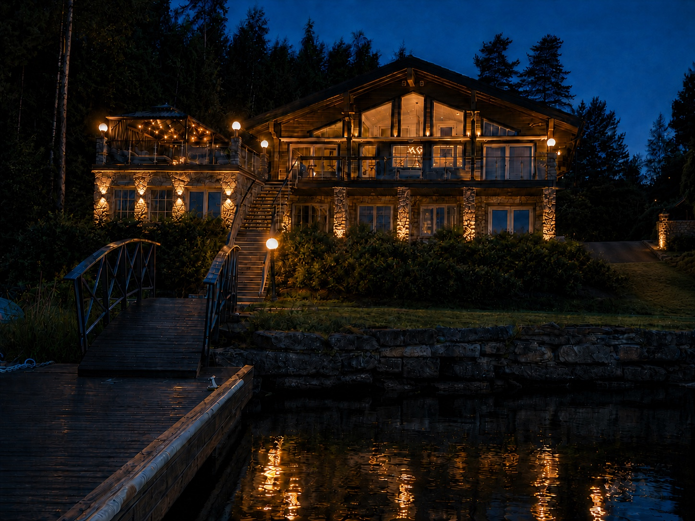
The lake after sunset
Blue hour changes the whole atmosphere. Water, forest and light turn the dock and the villa into a private evening landscape.
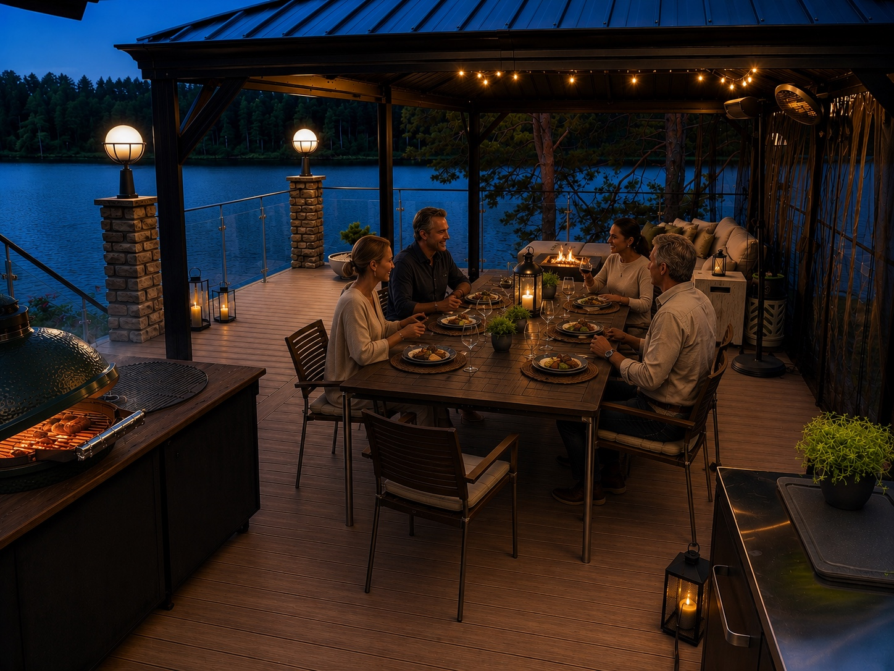
From the lake to the table
The day can move naturally from swimming or boating to the terrace — dinner by the water, with the lake still present beyond the glass.